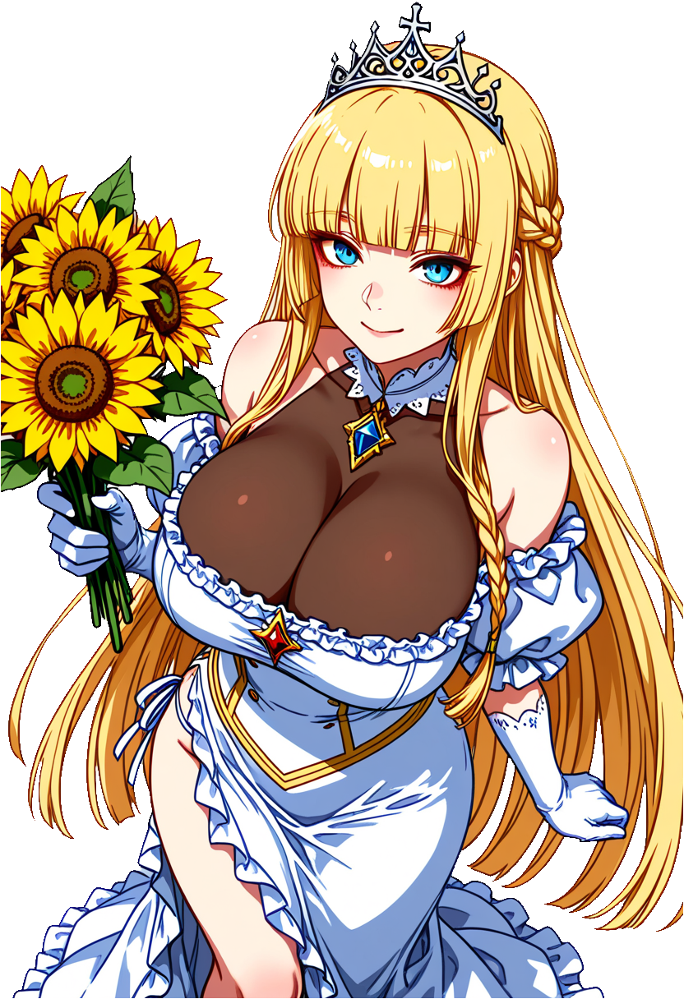

宝雀
武倉食堂部
山札（水色）
手札（オレンジ）
情報（紫）

最大所持点は完了した対戦が対象です。旧履歴は各場終了時の点数から集計します。勝利数には同率1位を含みません。
2人対戦で単独勝利すると各300 GP。
全員4枚で開始します。交換手番ごとに1枚引いて1枚捨てるか、役ができた手札でストップできます。最終巡はカードを引くと自動でストップします。規定交換数は巡数と同じです。ストップ後も手番ごとに1枚引き、そのカードを捨てます。相手の捨て札で役ができる場合はロンでき、捨て札を手札に加えてストップします。全員ストップ、または規定交換数の終了後にベットへ進みます。
2人：8巡・2局／3人：5巡・3局／4人：4巡・4局。チェック、1000点ベット、1000点刻みのレイズ、コール、フォールド、オールインでベットします。オールイン後、未対応者はコールかフォールドを選びます。ベット終了後は役の強さ、手札の最大数字、スートでショーダウンし、ポットを分配します。同順位のポットは均等分配し、端数は手番順です。
役の強さはペアシェイプ＜トリリアント＜キャッツアイ＜トライゴン＜カラーレス＜フローレス＜フォーダイト＜アステリズム＜4C＜ブリリアントです。同じ役なら手札の最大数字、次にその数字のスート（ダイア＞ルビー＞サファイア＞エメラルド）で比較します。全員フォールド時はポットを分配せず、次局に持ち越します。パラゴン、ドラ、リーチはありません。
最終所持点が多い順に順位を決定します。同じ所持点の場合は同順位です。